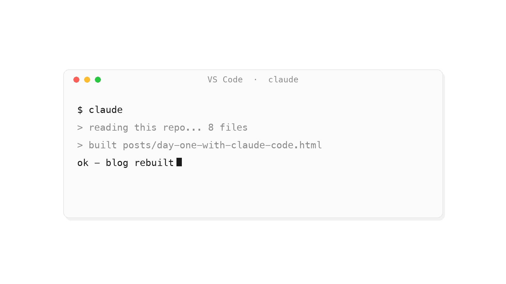

GPT-6 Astra Is Here: What We Actually Know
OpenAI rolled out GPT-6 Astra this week. A quick, honest rundown of the benchmarks, capabilities, pricing, and the safety noise around it.
NotesOpenAI rolled out GPT-6 Astra this week. A quick, honest rundown of the benchmarks, capabilities, pricing, and the safety noise around it.
Notes产品经理不是技术岗的近亲，而是一门涉及心理学、交互学、商业 sense 的杂学。聊聊用户研究的工具箱，和产品经理为什么要做"流行病学"。
ProductAI 正在从"对话框"走向"身体"。聊聊具身智能最火的两条技术路线——VLA 和世界模型：它们怎么迭代、在争什么、又卡在哪里。
AI从学生视角聊聊 DeepSeek Harness 的作用，以及它和 Claude Code、Hermes、Codex、WorkBuddy 的区别。
AI
Today I installed Claude Code into the VS Code terminal and watched it read my files, edit my repo, and build this blog in front of me. Diary entry, day one.
NotesJob hunting for students is opaque. Easy-Job-Tutor is a skill I wrote to change that — it teaches any AI assistant to be a resume coach that tells you plainly what's missing.
ProjectLoading contributions…
Get an email when I publish a new post.
Powered by Buttondown